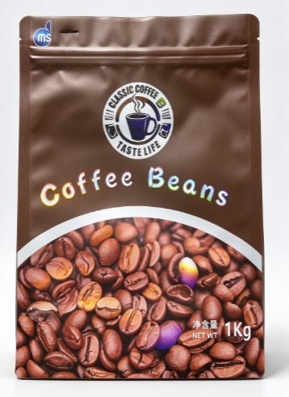

Coffee Bags
Applications: Coffee beans, ground coffee, specialty coffee and roasted coffee.
View details
Available Material Structures
- PET / ALU / PE — high barrier, foil lined
- PET / PE — standard barrier
- Kraft paper / ALU / PE — paper appearance with foil barrier
Features
- Degassing valve option
- Resealable zipper
- Moisture and light protection
- Matte, glossy or kraft finish
Printing Options
Digital printing for short runs and trial designs; gravure printing for bulk repeat orders. Matte, glossy, kraft or metalized surface finishes.
Customization Options
Logo, artwork, colors, size and bag design; valve, zipper, window and hang hole can be configured.